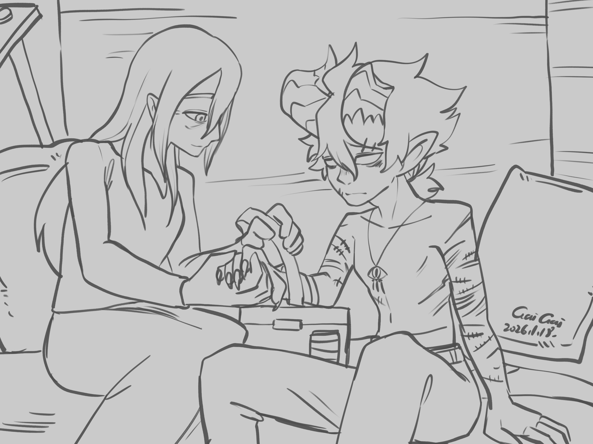

Chapter 1: Do Not Leave Us in the Dark
Py'Par's Vision


Py'Par's Vision
15051.10.18
忍著飢餓，巴斯扛起虛弱的羅特，跟著烏波朝著芒果留下的痕跡，持續往前追尋賽柏。再怎麼樣，都不能再失去夥伴了。羅特心想。樹林逐漸密集，但巨蛇留下的爬痕還依稀可見。羅特手中緊握著賽柏留下的奈西斯聖徽。雖然他不是奈西斯的信徒，但在這麼茂盛的樹林中，樹林之神奈西斯肯定是無比強大的吧。
隨著深入樹林，烏波發現巨蛇的爬痕越來越稀疏。他停了一下，依照自己對樹林的了解以及直覺，調整了路線。背著羅特的巴斯沒有多說話，只是拿起背在身上的酒壺喝了一口。背上的羅特聞到酒味，想起了一名故人。一樣是妖精，一樣喝著酒，一樣是在樹林中，他們從生人成為夥伴。除了芒果外，佛拉是那場悲劇唯一和羅特逃過一劫的人。但在那之後，羅特也不知道佛拉過得如何？會不會有和他一樣沉重的罪孽，背負在身上呢......
樹林內寂靜的不像話，只有穿梭在樹林間樹葉的沙沙聲，以及他們踏在地上的腳步聲。萬籟俱寂。冒險者們有了共識，在日落前一定要想辦法踏出這片樹林。日落後太危險了。烏波朝著他認為通往樹林邊緣的方向繼續行走。
終於，冒險者們看見了樹林的邊界。一名人形生物正自在地走出樹林。烏波大聲叫著，巴斯則加快步速，趕緊跟上。但在看見那人與自己幾分相似的特徵後，巴斯頓了一下。不是妖精，就是半妖精吧？但看那人穿著樸素，沒有特定的宗教標誌、貴族或王室的衣著，他也就放下戒心了。
陌生人在了解冒險者們的需求後，提議可以到他們的村莊過夜休息。眼看羅特筋疲力竭，冒險者們也沒多想，便跟上了。樹林的邊緣，村莊坐落在一處平整得離奇的區域。高高的木頭架起的大門只有門框，誰都能進來。村莊很小，放眼望去只有五、六間房子，和一座坐落在村莊中間的大營火，人數不超過20人。「歡迎你們！」帶著他們到來的陌生人微笑著說道。
三名孩子從村內跑了出來，積極的要幫助冒險者們。巴斯眼看這裡安全了，便把羅特從背上放了下來。村民們提供冒險者們客房居住，也表示如果他們不介意，也可以住在其他居民的家中。「別在夜晚離開這裡喔！」他們反覆說著這句話。
巴斯請一名外觀年齡十出頭歲的小女孩幫他裝了水袋，名為塔拉的女孩開心的帶著水袋跑了。年紀小了點的塔拉的弟弟尼姆，和另一名更年幼的小男孩，薩艾爾則護送著冒險者們來到客房。邀請他們晚點一起來營火邊吃晚餐後，兩名小男孩就手牽手跑了出去。
簡單的客房內有適合兩人居住的床鋪和桌子，羅特倒頭就睡。他已經很久沒有這麼舒服的休息了，這裡的床鋪甚至遠勝過不少其他城鎮的旅店。巴斯和烏波也各自找了角落簡單休息。一段時間後，巴斯注意到有個人影在窗邊，像是在窺探他們。那人像是年幼的薩艾爾。但當巴斯開門要去找他時，薩艾爾卻趕緊跑走了。巴斯猜測是晚餐時間到了，便帶著烏波和休息足夠的羅特一同前往營火旁。
待大家坐好後，一名中年女子站了起來，用洪亮的聲音，邀請巴斯、烏波和羅特來到這裡，成爲這裡的一家人。他也要大家好好享用今天的晚餐。「別在夜晚離開這裡。」他以這句話做總結，其他村民們也附和著：「別在夜晚離開這裡。」接著，隨著天色變暗，熱鬧的晚餐時間便開始了。
鐵盤上裝滿肉類的串燒，繞著營火傳遞，冒險者們大快朵頤，彷彿這裡的肉永遠吃不完一樣。孩子們不久後便開心的玩了起來，繞著營火，隨機點人「當鬼」。被點到的巴斯對著個民間的小遊戲也有所認識，站了起來，繞了幾圈，又點了其他小朋友的肩膀。不久後，大家的座位都換了，冒險者們也一一找到了不同的聊天對象。
巴斯嘗試詢問關於這裡的故事，當然包含了「為何不能在黑夜離開這裡」這件事。村民們說這是老祖宗留下的智慧，但對於到底為什麼會這樣說，也不清楚原因，只是被當成村規一樣牢牢記住而已。
烏波試著和孩子們傳教。這裡似乎對奈西斯稍有了解，但稱不上奈西斯的信仰者。而對於芬尼爾，還子們當然是完全不清楚。但對於宗教，孩子們聽了興致缺缺，直到烏波開始變形成他們身邊人的模樣，他們才開始興高采烈起來。
羅特和一名村民太太聊了起來，長久冒險下來突然可以如此開心、放鬆，這種情緒，反而讓他情緒潰堤，淚止不住地流了下來。太太把羅特擁入懷中。
「我們不是還在追著失蹤的賽柏？現在這樣幸福的吃著烤肉串、和孩子們玩耍、談著自己過去冒險的故事，是可以的嗎......」
羅特藉著烏波的烏鴉飛到他頭頂時，站起了身，追著烏鴉跑。然後趁著沒人注意時，繞到了客房不遠處旁的一間破舊屋子，躲了起來。破舊的門推開，那試衣間放滿農具的倉庫。他反手將門關了起來，倚著木門坐了下來。潸然淚下。一段時間後，敲門聲響起。太太的聲音溫柔地傳了進來。羅特開了門讓他加入自己，他也在太太的懷中再次痛哭。太太看了看羅特身上的傷口，承諾要帶工具回來幫羅特包紮。
另一方面，巴斯從背包掏出了一疊卡牌，吸引了一名年輕人的注意。他一步步教了年輕人怎麼玩牌。年輕人雖然資質不錯，但還是輸給熟練的巴斯。此時，一名年長的太太詢問巴斯有沒有需要他們幫忙洗的衣服或盔甲？巴斯便領著老太太先回客房去了。年輕人吆喝著說等巴斯回來，他就準備好要贏他了。客房內，巴斯在老太太的提醒下，才知道房內原來要脫鞋。他將自己的一件衣物和盔甲遞給了太太，但表示不方便動夥伴們的行囊。接著巴斯便敞開客房的門，休息之餘也可以看看其他人在忙些什麼事。
羅特聽見說好的三聲敲門聲，太太帶著一盒裝滿急救工具的盒子、一顆枕頭和一件衣服走了進來。他小心翼翼地替羅特擦藥與包紮，只著枕頭說著如果羅特想在這裡過夜也可以，然後讓羅特把衣服換了下來，先穿他帶來的衣服。太太離開不久後，羅特也再次走出倉庫外。
看見羅特，烏波變身成了眼魔的形象，對此有所感冒的羅特飛速地向他丟了兩把匕首洩恨。孩子們看了也覺得刺激有趣。薩艾爾將匕首撿了起來，屁顛屁顛的跑了回來，把匕首還給羅特。羅特拿起兩把匕首開始雜耍，表演得小朋友們很開心。
時間晚了，大人們催促著孩子們回家準備休息。烏波和羅特嘗試走到村門口，但馬上被一隻小手按著肩膀。尼姆說著「別在夜晚離開這裡」。烏波站在門口，嘗試感知這裡，卻沒有發現任何魔法或神的影響。尼姆的母親很快地趕了過來，同時也趕緊讓烏波和羅特往村莊內走。
回客房的路上，羅特再次見到了太太。知道羅特今晚情緒十分澎湃，太太邀請他今晚到他們家過夜，可以好好聊聊。羅特接受了邀請，便和太太前往他的家裡去。烏波則回到客房去。
關起門，烏波和巴斯表示自己對於這地方感到的不解。偌大的森林雖然是一片死寂，但肯定還是有危險。這種沒有任何防護措施的村莊好像在這裡好久、好久了，讓他感到古怪。而當然，還有那句老祖宗留下來的「別在夜晚離開這裡」，像咒語一般，不斷被覆誦著。巴斯則有不同想法。他認為這裡的人們有辦法取得足夠的肉品來做串燒，肯定是有足夠的自保能力。但當然，這不表示他對這個地方毫無疑惑。兩人決定好，今晚睡足後，在日出大家活動前，要到村莊邊緣探索一下。
太太的家裡，羅特用了浴室，終於將自己一身的疲憊洗淨。太太邀請他在客廳坐著聊天。他遞給羅特一杯甜甜的酒，十分好喝。羅特感謝太太的盛情款待，但同時他也很想知道關於這個村莊的歷史。然而，在喝下第二杯酒後，太太說起故事時，羅特的意識卻開始渙散，睡著了。
15051.10.19
床上，冥想中的巴斯聽見了門被小聲地打開。他睜開眼，矮小的身影映入眼簾，是薩艾爾。巴斯問他怎麼了，薩艾爾慌張的說自己只是要進來看看大家睡著了沒有。巴斯注意到薩艾爾離開前瞥了一眼鞋櫃。
待烏波睡飽後，兩人悄悄離開了客房，向客房旁的樹林邊緣探索。「你們在做什麼？」童稚的聲音從背後竄了出來，尼姆站在他們身後。「不可以到森林裡面去，很危險。」巴斯嘗試和他說李，但顯然沒那麼容易。烏波化身成大氣元素，朝著後方的樹林飛起，卻沒看見任何生機。尼姆嚷嚷著說烏波作弊，巴斯則說烏波有遵守約定，沒有「踏出」村莊外，尼姆則說他要去找他媽媽來。烏波繞了一圈回來後，載著巴斯也繞了一圈，卻一樣什麼也沒看見。回來時，尼姆的媽媽出現在他身旁。他沒有生氣，眼中僅是擔憂，抱著巴斯說著「沒事就好」。
「別在夜晚離開這裡。」他說。
15051.10.18
Enduring hunger, Buzz picked up the weak Lott, followed the traces left by Ubbo towards Mango, and continued to pursue Psyber. No matter what happens, we can't lose our partners again. Lott thought. The woods gradually became denser, but the crawling marks left by the giant snake were still faintly visible. Lott holds the Holy Emblem of Nessis left by Psyber in his hand. Although he is not a believer of Nessis, in such a lush forest, Nessis, the god of the woods, must be extremely powerful.
As he went deeper into the woods, Ubbo found that the giant snake's crawling marks became increasingly sparse. He paused and adjusted his route based on his knowledge of the woods and his intuition. Buzz, who was carrying Lott on his back, didn't say much. He just picked up the wine bottle on his back and took a sip. Lott smelled of alcohol on his back and thought of an old friend. They are both goblins, drinking wine, and in the woods. They have become partners from strangers. Apart from Mango, Phola was the only person who escaped the tragedy along with Lott. But after that, Lott didn’t know how Phola was doing? Will there be sins as heavy as his, carrying on his body...
The silence in the woods was eerily silent, with only the rustling of leaves passing through the woods and the sound of their footsteps on the ground. Everything was silent. The adventurers reached a consensus that they must find a way to get out of this forest before sunset. It’s too dangerous after sunset. Ubbo continued walking in the direction he thought led to the edge of the woods.
Finally, the adventurers saw the border of the woods. A humanoid creature walks comfortably out of the woods. Ubbo shouted loudly, and Buzz quickened his pace and hurriedly followed. But after seeing the features of that person that were somewhat similar to his own, Buzz paused for a moment. Not a goblin, but a half-goblin, right? But seeing that the man was dressed plainly, without any specific religious symbols, aristocratic or royal attire, he dropped his guard.
After understanding the needs of the adventurers, the stranger suggested that they could spend the night in their village. Seeing that Lott was exhausted, the adventurers followed without thinking too much. At the edge of the woods, the village sat in an eerily flat area. The tall wooden door has only a frame, so anyone can come in. The village is very small, with only five or six houses and a large campfire in the middle of the village, with no more than 20 people. "Welcome!" the stranger who arrived with them said with a smile.
Three children ran out of the village and actively tried to help the adventurers. Seeing that it was safe here, Buzz put Lott down from his back. The villagers provided guest rooms for the adventurers to live in, and also said that if they didn't mind, they could also stay in the homes of other residents. "Don't leave here at night!" they said over and over again.
Buzz asked a little girl who looked to be in her early teens to help him fill a water bag. The girl named Tara happily ran away with the water bag. Tara's younger brother Nim, and another younger boy, Sael, escorted the adventurers to the guest room. After inviting them to join them later for dinner around the campfire, the two little boys ran out hand in hand.
The simple guest room had a bed and table suitable for two people, and Lott fell asleep. It's been a long time since he had such a comfortable rest. The beds here are even far better than those in hotels in many other towns. Buzz and Ubbo also found a corner to rest briefly. After some time, Buzz noticed a figure by the window, as if spying on them. The figure looked like young Sael. But when Buzz opened the door to find him, Sael ran away quickly. Buzz guessed that it was dinner time, so he took Ubbo and Lott, who had had enough rest, to the campfire.
After everyone was seated, a middle-aged woman stood up and in a loud voice invited Buzz, Ubbo and Lott to come here and become a family here. He also wanted everyone to enjoy today's dinner. "Don't leave here at night." He concluded with these words, and other villagers echoed: "Don't leave here at night." Then, as the sky darkened, the lively dinner time began.
The skewers filled with meat on the iron plate were passed around the campfire, and the adventurers feasted as if there was never enough meat here. The children soon started playing happily, going around the campfire and randomly asking people to "become ghosts." Buzz, who was clicked, also knew something about this folk game. He stood up, walked around a few times, and tapped other children on the shoulders. Soon after, everyone's seats were changed, and the adventurers found different chat partners one by one.
Buzz tried to ask about the story here, including of course "Why can't I leave here in the dark?" The villagers say this is the wisdom left by their ancestors, but they don't know why they say this. They just remember it as a village rule.
UbboTry to preach to the children. There seems to be some understanding of Nessis here, but they cannot be called Nessis believers. As for Phyneal, the returnees certainly have no idea at all. But for religion, the children were not interested until Ubbo began to transform into the appearance of the people around them, and they began to become excited.
Lott chatted with a villager's wife. After a long adventure, he suddenly felt so happy and relaxed. This emotion made him burst into tears and he couldn't stop crying. The wife held Lott in her arms.
"Aren't we still chasing the missing Psyber? Is it okay to be so happy now, eating kebabs, playing with the children, and talking about stories about my past adventures..."
When Lott took advantage of Ubbo's crow to fly above his head, he stood up and ran after the crow. Then when no one was paying attention, he went around to a dilapidated house not far from the guest room and hid. The shabby door opened, revealing the fitting room and a warehouse filled with farm tools. He closed the door with his backhand and sat down leaning against the wooden door. Tears rolled down her cheeks. After some time, there was a knock on the door. The lady's voice came in softly. Lott opened the door and asked him to join him, and he cried again in his wife's arms. The wife looked at the wounds on Lott's body and promised to bring tools back to help Lott bandage them.
On the other hand, Buzz took out a stack of cards from his backpack, attracting the attention of a young man. He taught young people step by step how to play cards. Although the young man has good qualifications, he still lost to the skilled Buzz. At this time, an elderly lady asked Buzz if there were any clothes or armor that they needed help washing? Buzz led the old lady back to the guest room first. The young man shouted that when Buzz comes back, he will be ready to beat him. In the guest room, Buzz was reminded by the old lady that he had to take off his shoes in the room. He handed a piece of his clothing and armor to his wife, but said it was inconvenient to touch his companions' luggage. Then Buzz opened the door to the guest room so that he could take a rest and see what other people were doing.
Lott Hearing the three promised knocks on the door, the wife walked in with a box full of first aid tools, a pillow and a piece of clothing. He carefully applied medicine and bandaged Lott, holding only a pillow and saying that if Lott wanted to stay here for the night, he could, and then asked Lott to change his clothes and wear the clothes he brought first. Not long after his wife left, Lott also walked out of the warehouse again.
Seeing Lott, Ubbo transformed into the image of a beholder. Lott, who was cold about this, quickly threw two daggers at him to vent his hatred. The children also found it exciting and interesting. Sael picked up the dagger, ran back in a hurry, and returned the dagger to Lott. Lott picked up two daggers and started juggling, which made the children very happy.
It was late, and the adults urged the children to go home and prepare to rest. Ubbo and Lott tried to walk to the village gate, but were immediately pressed by a small hand on their shoulders. Nim said "Don't leave here at night". Ubbo stood at the door, trying to sense this place, but found no magic or divine influence. Nim's mother rushed over quickly, and also hurriedly asked Ubbo and Lott to go to the village.
On the way back to the guest room, Lott saw his wife again. Knowing that Lott was in a very emotional state tonight, his wife invited him to spend the night at their house so they could have a good chat. Lott accepted the invitation and went to his home with his wife. Ubbo went back to the guest room.
Behind closed doors, Ubbo and Buzz expressed their confusion about this place. Although the huge forest is deathly silent, there is definitely still danger. This kind of village without any protective measures seemed to have been here for a long, long time, which made him feel weird. And of course, there is the saying "Don't leave here at night" left by our ancestors, which is constantly being recited like a mantra. Buzz has a different idea. He believes that people here have the means to obtain enough meat to make skewers, and they must have enough ability to protect themselves. But of course, that didn't mean he had no doubts about the place. The two of them decided that after getting enough sleep tonight, they would explore the edge of the village before everyone started activities at sunrise.
At his wife’s house, Lott used the bathroom and finally washed away all his fatigue. The wife invited him to sit and chat in the living room. He handed Lott a glass of sweet wine, which was very delicious. Lott thanked his wife for her hospitality, but at the same time he also wanted to know about the history of this village. However, after drinking the second glass of wine, while his wife was telling stories, Lott's consciousness began to fade and he fell asleep.
15051.10.19
On the bed, Buzz, who was meditating, heard the door being opened quietly. He opened his eyes, and the short figure came into view, it was Sael. Buzz asked him what was wrong, and Sael said in a panic that he just wanted to come in to see if everyone was asleep. Buzz noticed Sael glance at the shoe cabinet before leaving.
After Ubbo had a full sleep, the two quietly left the guest room and explored the edge of the woods next to the guest room. "What are you doing?" A childish voice came from behind, and Nim stood behind them. "You can't go into the forest, it's very dangerous." Buzz tried to talk to him, but it was obviously not that easy. Ubbo transformed into an atmospheric element and flew towards the woods behind, but did not see any life. Nim yelled that Ubbo cheated, Buzz said that Ubbo had abided by the agreement and did not "step out" outside the village, and Nim said that he was going to find his mother. After Ubbo came back from a circle, he also took Buzz for a circle, but he saw nothing. When he came back, Nim's mother appeared beside him. He was not angry, his eyes were just worried, and he hugged Buzz and said, "It's okay."
"Don't leave here at night," he said.